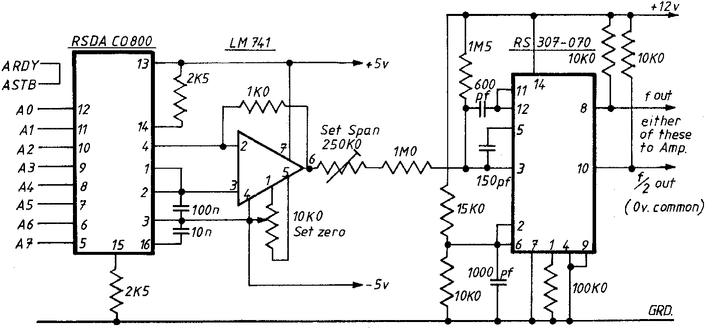

INMC 80 News |
February–April 1981 · Issue 3 |
| Page 46 of 55 |
|---|
or “How to find out what it really does” – a sort of review |
by K. Hamlyn. |
When I started to look at this volume, I was nearly a Dodo – not quite, because I could spel “Zeep”. However there was a vague impression in the back of my mind that a “shift right with carry” might be connected with the political activities of some members of the Parliamentary Labour Party.
Seriously, though, having tried two other books, this one provided a refreshing view onto a subject which has an unwarranted mystique, brought about by people who can speak the jargon. As an interpreter it is most useful.
You start by learning the fundamental operating procedures of the strange 16 base arithmetic, followed by a rundown on the ways in which the microprocessor and memory work. Having been given an outline of flowcharting, the reader needs to sit by the keyboard of his machine, as the rest of the book is entirely practical. Having put in the first program, and executed it, the HALT light glows and the reader bounces slightly because it has worked first time and he eagerly anticipates the next one. In working through this course, there is a definite wifeware problem and a drain on the coffee stores as the dawn breaks and the sparrows go coughing and stomping in the gutters.
Finally there are some useful circuits which enable the reader to monitor the ports and to operate in an analogue mode from and to these ports.
This is a well written book which will help the prospective machine code programmer to go from Dodo status to a reasonable standard. A necessary volume for any Nascom owner.
‘Machine Code Programming for the Nascom 1 and 2’ is published by Interface Components, costs 4.95, and is available from your Nascom distributor.
(See following article)
| Page 46 of 55 |
|---|